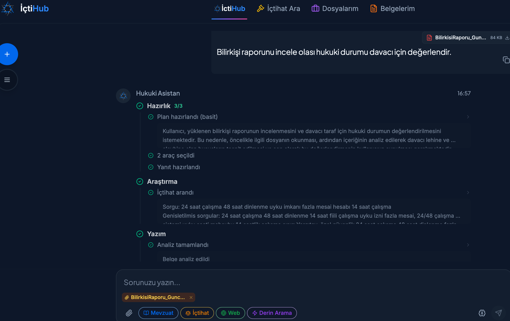

İçtiHub nedir?
İçtiHub, EcoFluxion'ın amiral gemisi ürünü: hukuk profesyonelleri için tasarlanmış, yapay zeka destekli bir hukuk platformu. Amacı basit ama iddialı — bir avukatın saatlerini alan içtihat taramasını, belge incelemesini ve araştırmayı dakikalara indirmek.
Platformu deneyimlemek isterseniz ictihub.com üzerinden İçtiHub'a doğrudan ulaşabilirsiniz.
“İçtiHub'ın işi avukatın yerini almak değil; ona en sıkıcı, en zaman alan işi geri vermek.”
Hangi sorunu çözüyor?
Hukukta doğru karar, çoğu zaman doğru içtihadı bulmaktan geçer. Ama Yargıtay, Danıştay ve diğer kaynaklardaki milyonlarca karar arasında aradığını bulmak hem zaman alır hem de gözden kaçma riski taşır. İçtiHub bu yükü üstlenir: doğal dille sorulan bir soruyu anlar, ilgili kararları getirir ve gerekçeleriyle özetler.
Temel özellikler
- İçtihat arama: Anahtar kelime değil, anlam temelli (semantik) arama. “Ne demek istediğinizi” anlar.
- Belge analizi: Sözleşme, dilekçe ve kararları okuyup özetler, riskli noktaları işaret eder.
- Akıllı hukuki asistan: Sorularınızı yanıtlar, kaynaklara bağlar; “uydurmaz”, gerçeğe dayandırır.
- Arşiv ve belge yönetimi: Hukuki kaynaklar ve kurum belgeleri tek yerde.
- Kurumsal güvenlik: Güvenli bulut altyapısı, çok kullanıcılı iş birliği.

Perde arkasında ne var?
İçtiHub bir “sihir” değil; sağlam bir mühendislik yığınının üstünde duruyor:
- MevzuatBot — Türkçe hukuk diline göre eğitilmiş büyük dil modeli. Hukuki terminolojiyi anlar.
- RAG — Cevapları gerçek kararlara ve mevzuata dayandırır, böylece yapay zekanın “uydurma” riskini düşürür.
- Semantik arama + vektör veritabanı — Milyonlarca belge içinde anlam temelli, hızlı getirim.
- MCP ajan sistemi — Hangi aracın ne zaman kullanılacağını akıllıca yönlendirir.
Bu bileşenlerin nasıl bir araya geldiğini merak ediyorsanız, büyük dil modeli nedir ve RAG nedir yazıları iyi bir başlangıç.

Neden önemli?
Türkçe hukuk, kendine özgü bir dil ve mantık taşır. İngilizce'ye göre tasarlanmış genel modeller bu alanda sık sık yanılır. İçtiHub'ın değeri tam da burada: Türkçe'ye ve hukuk diline özel olarak inşa edilmiş olması. Bu, hem doğruluk hem de güven demek — hukuk gibi hata payının düşük olması gereken bir alanda en kritik şey.
İçtiHub, EcoFluxion'ın “araştırmayı ürüne çevirme” felsefesinin en somut örneği. Bu vizyonun arkasındaki isim için İsmail Tarık Şenkal kimdir? yazısına göz atabilirsiniz.